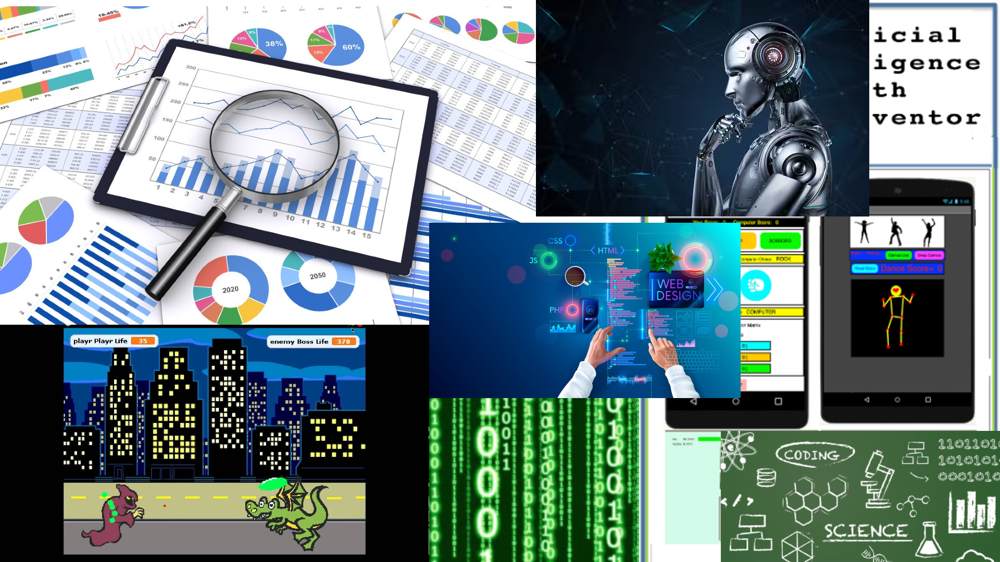

This was a ceramics project I was really proud of
My bread from the bread project. I made this one with regular starter the other bread I made I used milk starter
This is a ceramics pizza gifft I made
I went to piedmont middle school. In middle school I learned all of the subjects like english, reading, history, math, science. All the fun ones. OH! I almost forgot about ART! I met some of my coolest friends Annna and Kalindi, but we met at wildwood. Who would've thought that in just a few years we would meet Ms.Newell. On our first day of coding class we were intimidated by the big coding words, but still determined. Although in the begining of the year we might have goofed off a bit we realized how passionate Ms.Newell was about coding, now we always listen to Ms.Newell and learn new coding facts from her fun videos! I guess now we all know why the class is called the joy of computing!;)

| 
This was a ceramics project I was really proud of |
My bread from the bread project. I made this one with regular starter the other bread I made I used milk starter |
This is a ceramics pizza gifft I made |
I used CSS to create many things for coding. I made a web page a video game and data analysis, and I also learned how CSS has impacted artificial intelligence. I learned the basic coding skills through snap and MIT. Code.hs then helped me learn HTML web design and python. CSS and AI are both now a huge part of my life everyn day.